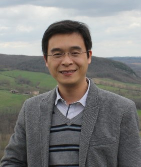
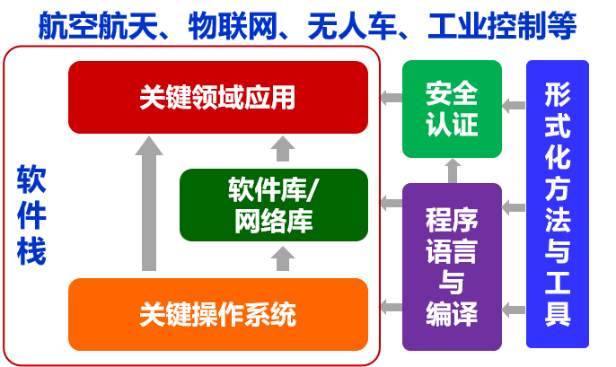
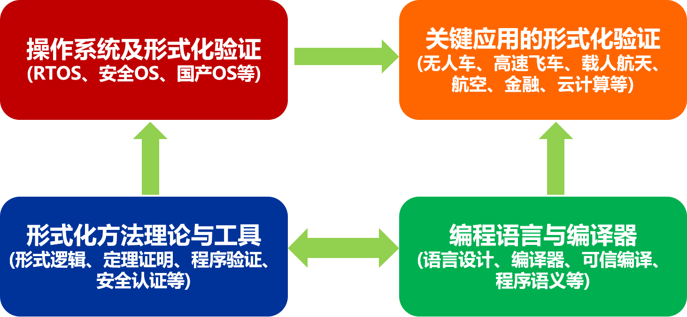

简介 Introduction
|  |
Yongwang ZHAO, Ph.D, Full Professor |
微信号: |
微信公众号: |
新闻 News
- [2025-06-01] 由本人发起并组织的中国“第一届定理证明竞赛”正式启动，欢迎报名参赛，详见竞赛主页
- [2024-12-19] Paper accepted by ACM SIGPLAN International Conference on Object-Oriented Programming Systems, Languages, and Applications (OOPSLA 2025)，这是编程语言领域顶会OOPSLA创会40年来，浙江大学首次以第一作者单位在OOPSLA会议上发表论文。
- [2024-08-27] Paper accepted by ACM Transactions on Software Engineering and Methodology (TOSEM).
- [2024-03-08] 团队的论文被ACM Formal Aspects of Computing(FAC)期刊遴选为2023年度Featured Article， 详见新闻。
- [2023-10-26] 【重大新闻】我们承担了小米自研TEE系统的形式化验证与EAL5+高等级安全认证工作，成为小米澎湃OS的安全技术底座。澎湃OS的高等级安全，由本人作为“安全代言人”，亮相10.26小米新品发布会。 同时，这两项工作 已在小米澎湃OS的官网发布，详见 小米澎湃OS首页，“全域安全”板块的“观看视频”和内容介绍。
- [2023-09-01] 本人领衔的翔云团队高安全航空机载平台FlyCube正式亮相， 详见新闻
- [2023-08-01] 我们编写的书籍《PiCore形式化方法与实践》已发布，内容不断更新中...... 详见书籍网站
- [2023-08-01] 本人领衔的翔云团队高安全无人机FlyAir2.0试飞成功， 详见新闻
- [2023-07-11] 经过我们形式化验证的小米TEEOS(MiTEE)获得CCRC颁发的国内首张最高安全认证等级EAL5+证书，详见 新闻1， 新闻2
- [2023-06-06] 担任浙江省天目山实验室 第一届理事会 理事， 详见新闻
- [2023-04-15] 我们研发的Isabelle定理证明云平台(Isabelle/Cloud)正式对外发布， 详见Isabelle/Cloud网站
- [2023-02-25] 第一届开放原子开源基金会OpenHarmony技术峰会 | 操作系统形式验证与安全认证， 详见新闻及视频
- [2022-12-28] 带队获“2022金融密码杯全国密码技术大赛”一等奖，详见新闻。
- [2022-12-11] 本人领衔的翔云团队基于自主操作系统研发的无人机系统试飞成功，详见新闻。
- [2022-09-23] 形式化验证大有可为，详见新闻。
- [2022-07-01] 由本人领衔、依托浙江大学嘉兴研究院的翔云创新团队正式成立，聚焦高安全实时操作系统的研发与应用，详见官网。
- [2021-12-06] 与中国电子技术标准化研究院联合主办嵌入式操作系统标准研讨会，汇聚了国内主要的嵌入式实时操作系统厂商、院所和高校。
- [2021-09-24] 本人当选中国计算机学会(CCF)杰出会员，详见CCF官网。
- [2021-03-03] 我们团队在编程语言安全领域取得突破，浙大首次在TOPLAS期刊发表论文， 详见新闻
- [2021-07-01] 我们编写的书籍《函数式程序设计与证明》已发布，内容不断更新中...... 详见书籍网站
- [2020-12-30] 作为发起人之一，发起成立TPChina定理证明开放社区， 详见官网
- [2020-11-01] Paper accepted by ACM Transactions on Programming Languages and Systems, 这是该期刊自1979年创刊以来，浙江大学首次在该期刊上发表论文。 详见新闻
- [2020-11-25] 受邀在Symposium on Dependable Software Engineering: Theories, Tools and Applications(SETTA 2020)做大会特邀报告：Rely-guarantee Reasoning about Concurrent Reactive Systems: Framework, Languages Integration and Applications。 详见主页
研究方向 Research Interests
|  |  |
- 形式逻辑与验证 (Formal Logic & Verification)
- 操作系统内核及安全 (Operating Systems/Security/Safety)
- 编程语言 (Programming Languages)
- 安全攸关系统与软件 (Safety/Security Critical Systems & Software)
- 智能/学习 (AI/Learning)
-
形式化方法 (Formal Methods, Event-B), 并发系统 (Concurrency, Rely-Guarantee)
定理证明 (Theorem Proving, Isabelle/HOL), 程序验证 (Program Verification, Why3)
-
内存管理及逻辑框架(Memory Management and its Logic Framework)
嵌入式虚拟化 (Embedded Hypervisor), 微内核/分区内核/隔离内核 (Micro/Partitioning/Separation Kernels)
ARINC 653标准 (ARINC 653 standard), 多核操作系统 (Multicore)
形式模型与安全验证 (Formal Specification and Verification of OSs)
-
函数式编程 (Functional Programming), 程序语义 (Formal Semantics)
程序证明 (Program Proofs), 并发语言 (Concurrent Languages)
-
安全认证(Safety/Security Certification), DO-178/Common Criteria (CC)
-
模型驱动方法 (Model-driven Development, AADL), 信息流安全 (Information Flow Security)
-
无人车系统 (Autonomous Vehicle), 无人机系统(Unmanned Aerial Vehicle)
-
模型学习 (Model Learning), 基于学习的程序验证/合成 (Learning-based Program Verification/Synthesis)